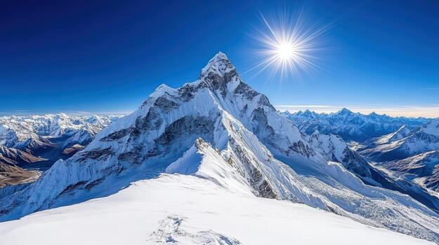
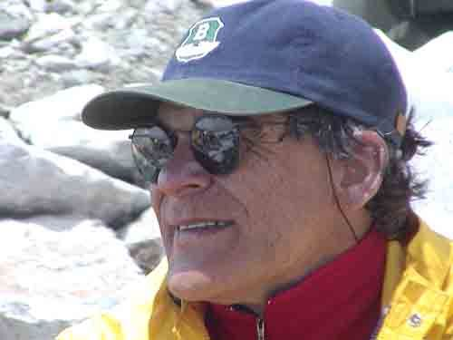
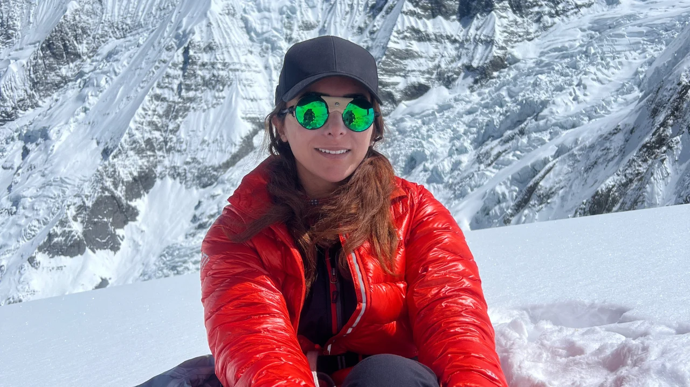
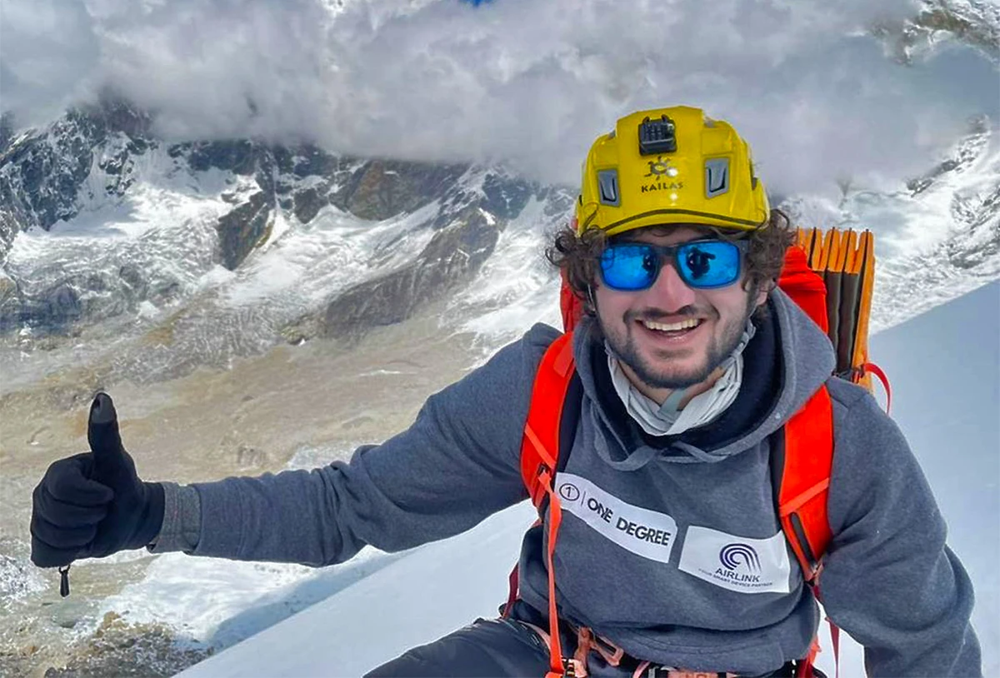

HIGHEST MOUNTAIN
Mount Everest
8,848.86 metres
Discover the extraordinary achievements, historic expeditions and legendary mountaineers who continue to push the boundaries of human endurance across the world's highest mountains.
EXPLORE THE RECORDS8,848.86 metres
8,611 metres
Home to legendary expeditions
Explore the world's highest peaks, their first successful ascents and the expeditions that made mountaineering history.

WORLD'S HIGHESTMeet the Pakistani mountaineers whose determination, courage and achievements have earned them a place in the history of high-altitude climbing.
High-Altitude Mountaineer
Sirbaz Khan is known for his remarkable achievements on the world's highest mountains. In October 2024, he completed all fourteen 8,000-metre peaks, becoming the first Pakistani to achieve this milestone.



Extraordinary achievements from the world's highest mountains, where endurance, skill and determination push the limits of mountaineering.
In 2019, Nirmal Purja completed all fourteen mountains above 8,000 metres in a record time of six months and six days.
6 MONTHS · 6 DAYS VERIFY RECORDOn 16 January 2021, ten Nepali climbers became the first team to successfully reach the summit of K2 during winter.
10 CLIMBERS · 2021 VERIFY RECORDNirmal Purja's Project Possible records his achievement of climbing the world's five highest mountains in 70 days in 2019.
70 DAYS · 5 PEAKS VERIFY RECORDIn October 2024, Nima Rinji Sherpa, aged 18, completed all fourteen mountains above 8,000 metres, becoming the youngest person to achieve this feat.
AGE 18 · 2024 VERIFY RECORDIn October 2024, Sirbaz Khan became the first Pakistani mountaineer to summit all fourteen of the world's 8,000-metre peaks.
PAKISTAN FIRST · 2024 VERIFY RECORDOn 29 May 1953, Edmund Hillary and Tenzing Norgay became the first people to reach the summit of Mount Everest.
29 MAY · 1953 VERIFY RECORDA timeline of milestones that changed the history of mountaineering.
Edmund Hillary and Tenzing Norgay achieved the first confirmed ascent of Mount Everest.
Achille Compagnoni and Lino Lacedelli achieved the first confirmed ascent of K2 in 1954.